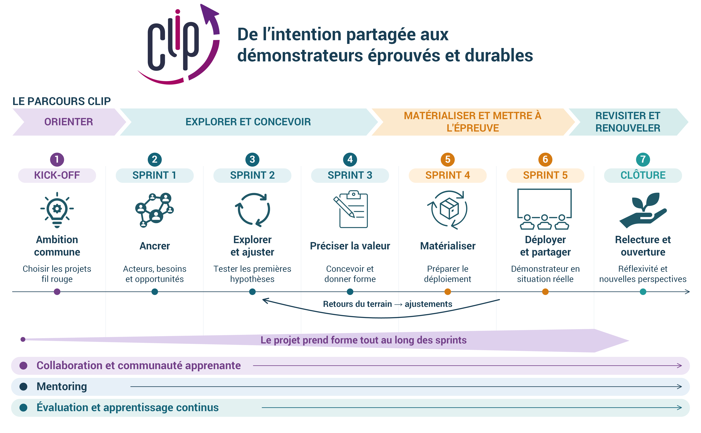

Le parcours
Bienvenue dans le CLIP
Le Collaborative Innovation Lab Incubation Program - CLIP accompagne les équipes dans la conception, le développement et la mise en œuvre de leurs initiatives d’innovation collaborative. Il associe formation, ateliers pratiques, expérimentation et accompagnement pour transformer une intention d’innover partagée en actions concrètes.
Depuis sa première édition en 2021, consacrée aux Climate Labs avec dix universités d’Amérique latine, puis l’édition CLIP-USACH à l’Universidad de Santiago de Chile en 2023-2024, et enfin une dernière édition avec des managers du groupe Airbus en 2025-2026, ce programme évolue avec les contextes et les équipes qu’il accompagne. Chaque édition conserve une même ambition : apprendre ensemble, développer les capacités du collectif et construire des initiatives ancrées dans leur écosystème.
CLIP-ASTERIE
Cette édition accompagne les directions opérationnelles des TLE du réseau ASTERIE. Elle répond à trois besoins complémentaires : disposer de méthodes pratiques et reproductibles pour conduire des projets complexes sur les territoires ; construire une identité, des valeurs et des objectifs communs ; mieux communiquer et valoriser les contributions des TLE auprès de leurs écosystèmes.
Le parcours poursuit cinq objectifs :
Un cadre méthodologique pour agir et expérimenter
Le CLIP s’appuie sur les travaux de l’ERPI de l’Université de Lorraine consacrés à la conception et pilotage d’espaces d’innovation, notamment le cadre proposé par Osorio et ses collègues en 2019.
Dans CLIP-ASTERIE, cet héritage guide une démarche qui relie intention stratégique, conception collective, matérialisation, usages, évaluation et adaptation. Il aide à travailler simultanément sur les projets, les conditions de leur mise en œuvre et les capacités du réseau.
Quatre mouvements structurent le parcours :
Orienter : partager une ambition et choisir les projets fil rouge.
Explorer et concevoir : comprendre les contextes, tester les hypothèses et préciser la valeur des propositions.
Matérialiser et mettre à l’épreuve : construire, déployer et apprendre de l’expérience.
Revisiter et renouveler : réinterpréter le chemin parcouru et ouvrir de nouvelles perspectives.
Ces mouvements donnent des repères tout en permettant des retours et des ajustements. Les projets prennent forme progressivement, et les enseignements de l’expérimentation peuvent conduire à revoir les choix initiaux.

La désirabilité, la faisabilité et la viabilité d’un projet d’innovation sont ainsi des questions revisitées tout au long du parcours. L’évaluation continue permet de documenter les apprentissages et de mieux comprendre la contribution des projets et du réseau aux territoires.
Les étapes
| Étape | Date | Objectif |
|---|---|---|
| Kick-off | 14/10/2026 | Le lancement permet de mettre en commun les besoins des TLE, de poser les premières bases de l’intention stratégique du réseau et de définir les projets prioritaires qui guideront la formation. |
| Sprint 1 | du 14/10 au 18/11/2026 | Comprendre le territoire, ses acteurs et nous-mêmes en tant que réseau, afin d’identifier les forces et les obstacles existants, ainsi que les opportunités d’action. |
| Sprint 2 | du 19/11/2026 au 06/01/2027 | Les premières hypothèses sont confrontées au terrain. Les retours recueillis aident à préciser les besoins, à questionner les choix de départ et à ajuster les projets. |
| Sprint 3 | du 07/01 au 10/02/2027 | Les équipes clarifient ce que leurs projets apportent, à qui et dans quelles conditions. Elles développent des propositions et des supports concrets pour les partager et les faire évoluer. |
| Sprint 4 | du 11/02 au 24/03/2027 | Le travail porte sur les conditions de mise en œuvre : ressources, compétences, partenaires, répartition des rôles et organisation du déploiement du démonstrateur. |
| Sprint 5 | du 25/03 au 12/05/2027 | Le démonstrateur est mis en œuvre et présenté dans un événement ou un cadre public. Ce moment permet de rendre les projets visibles, de partager la contribution du réseau et de recueillir des observations et des retours. |
| Clôture | Début juillet 2027 - À confirmer | La clôture est consacrée à la réflexivité : prendre du recul, partager les apprentissages, revisiter les intentions initiales et envisager la suite pour les projets, les TLE et le réseau. |
Le rythme et les temps collectifs
CLIP-ASTERIE propose un accompagnement sur la durée, organisé autour de sprints thématiques qui alternent temps collectifs et travail autonome.
Les ouvertures de sprint permettent de partager les avancées, les apprentissages et les décisions, puis de découvrir les objectifs et les activités de la nouvelle étape.
Les ressources pédagogiques apportent des repères pour préparer et nourrir le travail : vidéos, supports méthodologiques et modèles d’atelier.
Les ateliers collaboratifs permettent d’appliquer les méthodes aux projets et de construire collectivement les propositions. Les tableaux de travail sont disponibles sur Miro.
Le travail autonome prolonge les échanges et fait avancer les projets entre les rendez-vous. Environ 1 h 30 par semaine est attendue pour réaliser les activités proposées.
Le mentoring, assuré par l’équipe ERPI/ENSGSI, accompagne les équipes tout au long du processus pour discuter les difficultés, éclairer les choix et soutenir leur progression.
La documentation et le partage des résultats permettent de conserver les traces du travail, de rendre les évolutions visibles et de constituer une mémoire commune du parcours.
À l’issue du programme, un certificat individuel de participation sera remis aux directrices et directeurs opérationnels, ainsi qu’un certificat d’incubation à chaque TLE participant.
Les outils et espaces de travail
Deux espaces complémentaires vous accompagnent :
Le site web CLIP-ASTERIE centralise les informations du programme et les ressources pédagogiques.
Miro accueille les tableaux collaboratifs et les modèles utilisés pour conduire les ateliers.
Ces supports facilitent le travail entre les séances, la formalisation des projets et le partage des apprentissages. Les outils et méthodes mobilisés pendant le parcours pourront également être réutilisés pour d’autres projets sur vos territoires.
Références
Osorio, F., Dupont, L., Camargo, M., Palominos, P., Peña, J. I., & Alfaro, M. (2019). Design and management of innovation laboratories: Toward a performance assessment tool. Creativity and Innovation Management, 28(1), 82–100. https://doi.org/10.1111/caim.12301